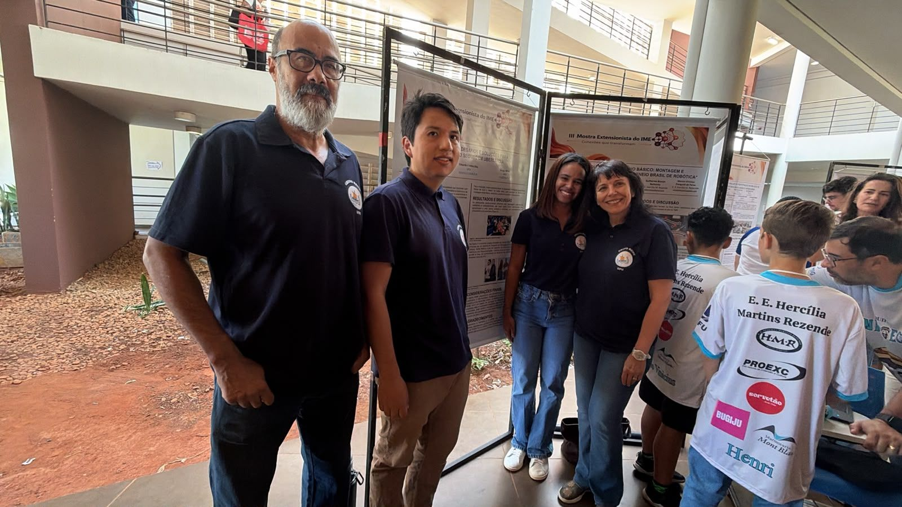

Matemática e estatística aplicadas a problemas reais de empresas
O REME (Remodelando sua Empresa com Matemática e Estatística) é um projeto de extensão e pesquisa do IME/UFU, aprovado pelo colegiado do Programa de Pós-Graduação em Matemática (PPGMAT) e vinculado ao programa “Extensão no PPGMAT: redefinindo paradigmas da pós-graduação”. Docentes e estudantes trabalham com empresas, órgãos públicos e entidades de Uberlândia e região em desafios reais.
- 2024início do projeto, no IME/UFU
- 14 docentesdo IME, da FACOM e da FEMEC
- 2 ediçõesda Oficina REME com estudantes
- Selo ODSEducação 2025
Sobre o projeto
O REME é um projeto de extensão e pesquisa do Instituto de Matemática e Estatística da UFU, vinculado ao programa “Extensão no PPGMAT: redefinindo paradigmas da pós-graduação”, do Programa de Pós-Graduação em Matemática. Começou em 2024 e está na segunda edição (registro SIEX 36463).
Aprovado pelo colegiado do PPGMAT, o REME tem caráter de pesquisa. Os desafios trazidos pelas empresas são estudados com métodos científicos e dão origem a dissertações, teses, artigos e trabalhos apresentados em congressos.
O projeto aproxima a universidade do setor produtivo. Empresas e instituições trazem desafios reais, e docentes e estudantes de graduação e pós-graduação usam matemática, estatística e computação para estudá-los. O que se aprende volta para as aulas, para as dissertações e teses e para as próprias empresas.
Objetivos
- Promover a colaboração entre a universidade e as empresas, fortalecendo o ensino na pós-graduação e na graduação do IME.
- Transformar desafios das empresas em temas de pesquisa na pós-graduação.
- Desenvolver soluções científicas para problemas de produtos, processos e serviços das empresas.
- Promover a troca de saberes entre docentes, estudantes e profissionais, por meio de Pitch Reversos e Oficinas REME.
- Preparar estudantes para aplicar matemática, estatística e análise de dados a problemas do mercado.
- Incorporar a extensão e a inovação à formação acadêmica e aos currículos dos cursos do IME.
- Gerar oportunidades de cooperação, estágios e parcerias em Uberlândia e região.
Formação e pesquisa
Os desafios das empresas viram temas de pesquisa. A participação em Pitch Reversos já orientou temas de dissertações de mestrado do PPGMAT, principalmente em modelos de inteligência artificial. Alguns exemplos:
- “Modelagem preditiva do risco de incêndios em plantações de eucalipto via redes neurais”, de Victor Patrick Lima, que partiu do desafio da Oficina REME de 2025.
- “Estimativa fuzzy do lucro para produção de vestuário via aplicativo móvel”, de Kevin Marroquín.
- “Comparação entre modelos de redes neurais U-Net e U-Net Fuzzy para mensurar regiões de imagens de ultrassonografia bovina”, dissertação de mestrado de Victor Patrick Lima, defendida em 2026.
- A calculadora do risco de acidente de trânsito pelo consumo de álcool, de Fernanda Flor.
Os dois primeiros trabalhos foram premiados entre os destaques do I Workshop Mineiro de Matemática Aplicada.
Na Oficina REME, duplas de estudantes têm dois dias para propor uma solução a um problema real e apresentá-la a uma banca. A edição de 2025 tratou de risco de incêndio em áreas de reflorestamento; a de 2026, do trânsito de Uberlândia.
Conheça a Oficina REME

Sua empresa tem um desafio que depende de dados?
Previsão de demanda, logística, gestão de risco, controle de qualidade, painéis e sistemas sob medida. Veja como o REME trabalha e como participar pelos editais de 2026.
Parceiros
Empresas e instituições que assinaram parceria ou patrocínio com o REME pelas chamadas públicas do IME/UFU.
2026
- Auto Escola Ribeiro
- Duas Rodas
- Instituto Vias
- Rotary Club de Uberlândia Sul
2024 e 2025
- Brasilwood Reflorestamento
- Hotspot Ambiental
- Instituto de Ciência e Tecnologia Brain
- Reptec
Contato
Para propor um desafio, tirar dúvidas sobre os editais ou convidar a equipe para uma visita, escreva para o REME. Conte em poucas linhas qual é a situação e que dados a empresa já tem.
- E-mailreme@ime.ufu.br
- EndereçoInstituto de Matemática e Estatística (IME/UFU)
Av. João Naves de Ávila, 2121, Bloco 1F, sala 120
Campus Santa Mônica, Uberlândia (MG) - Instagram@gruporemeufu
- LinkedInlinkedin.com/company/gruporeme